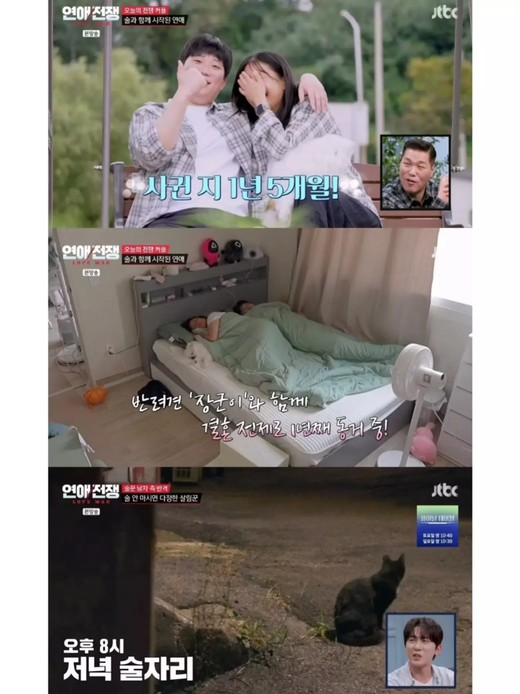
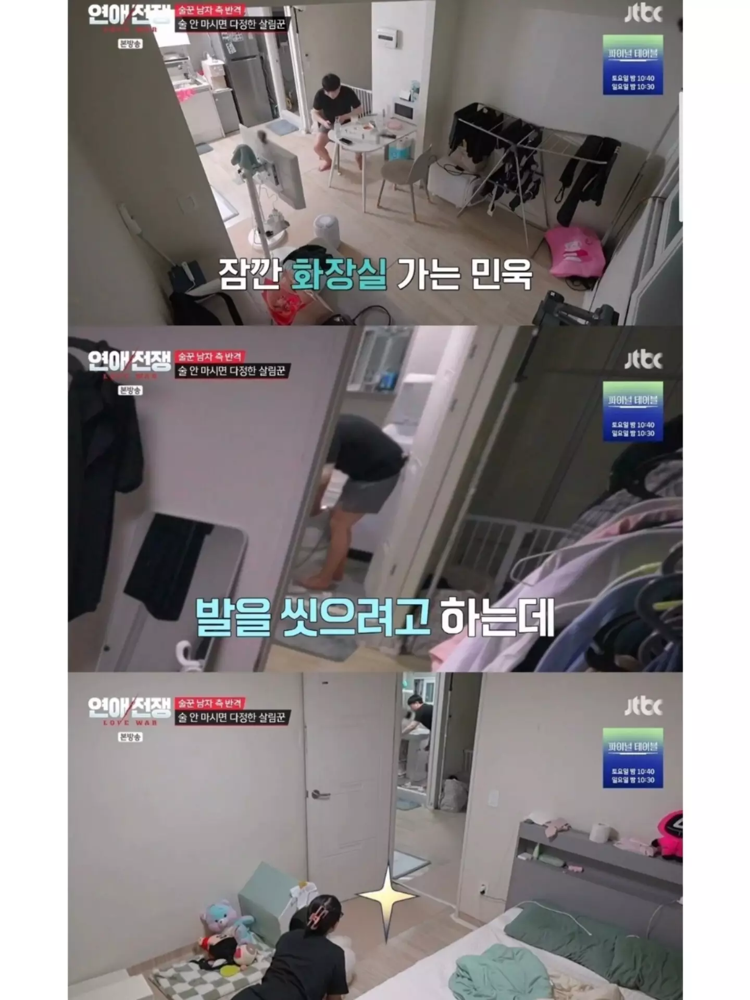
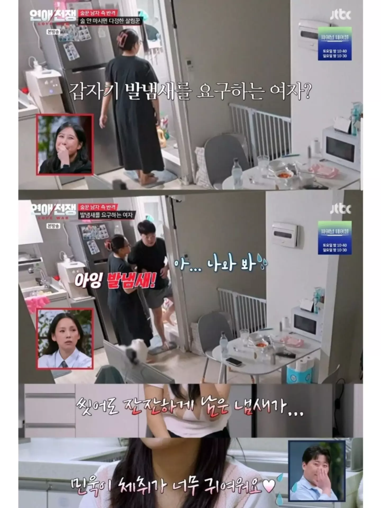
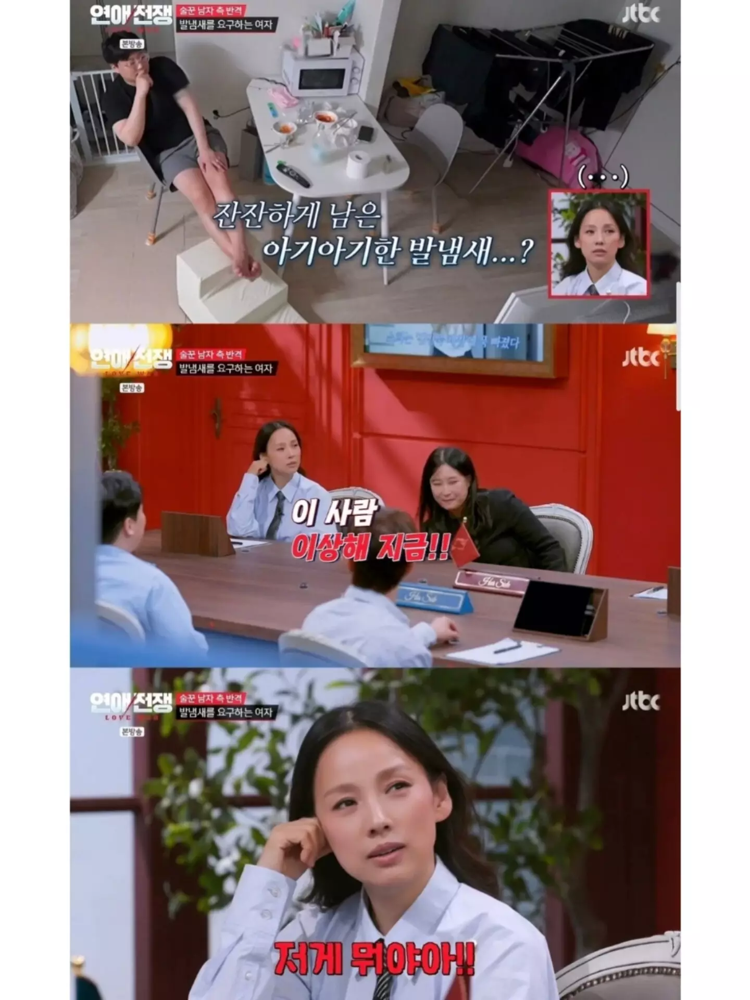
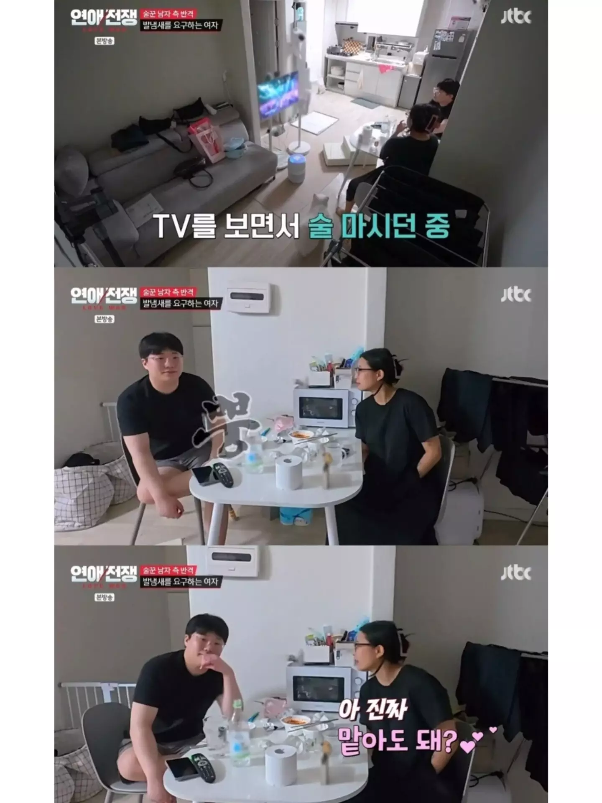
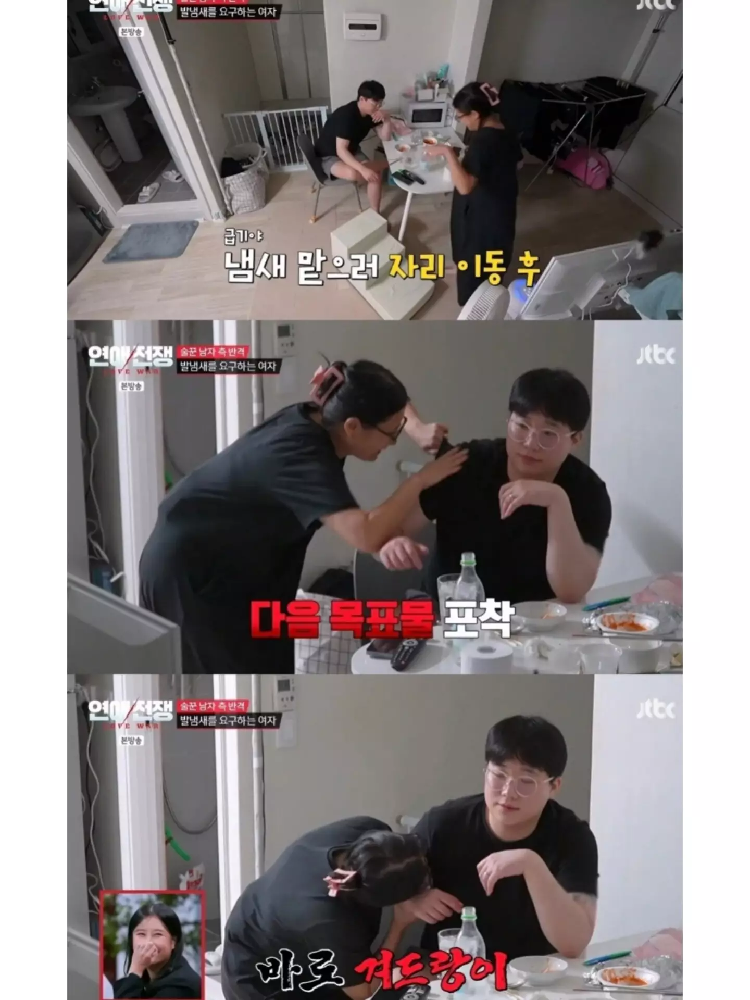
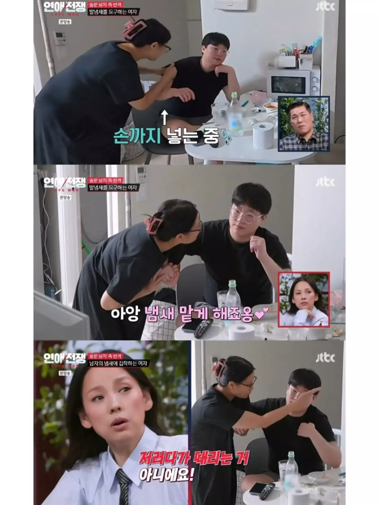
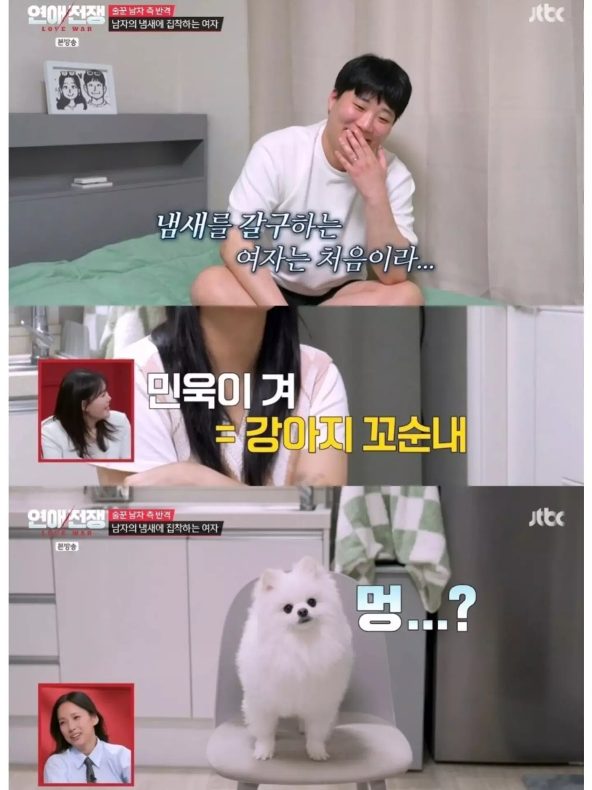
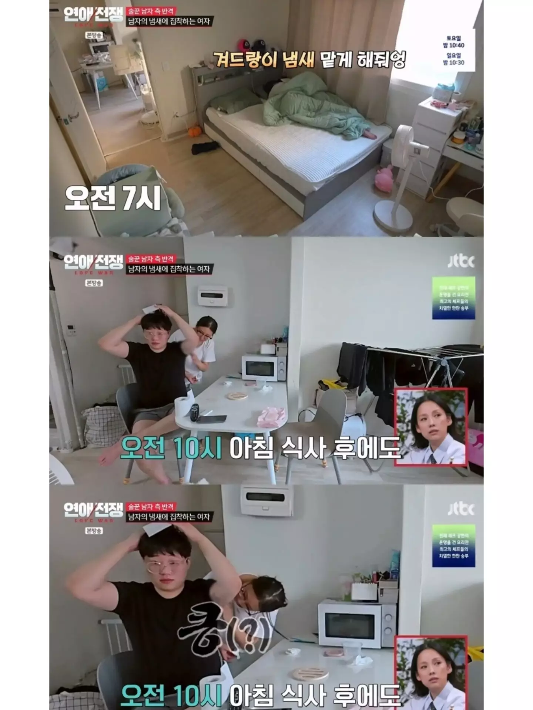
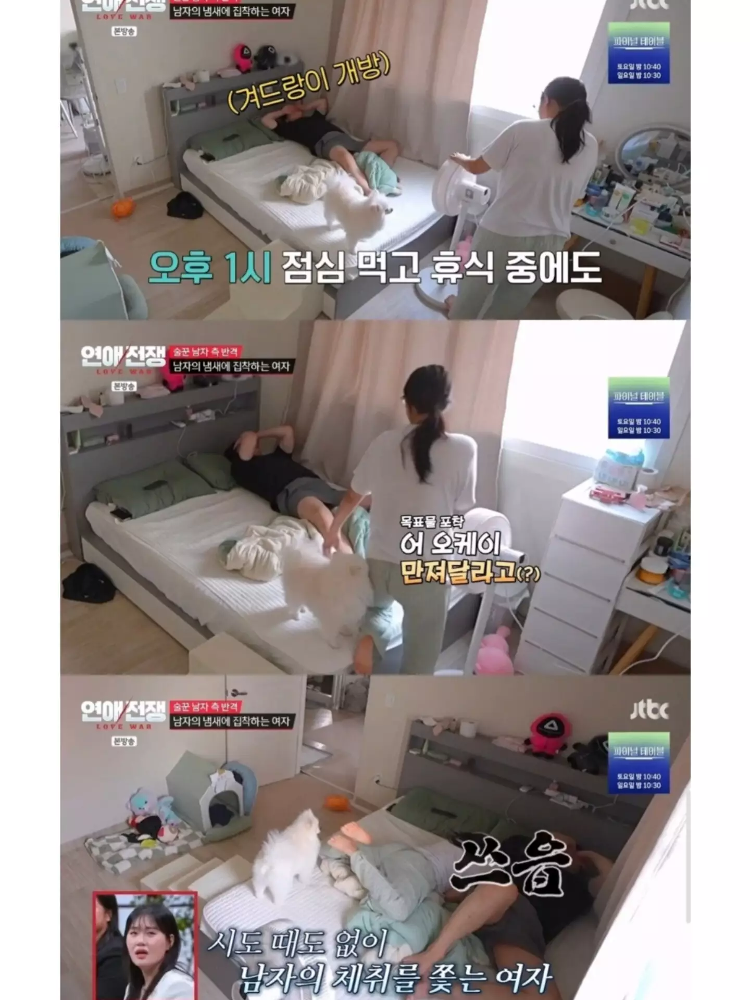
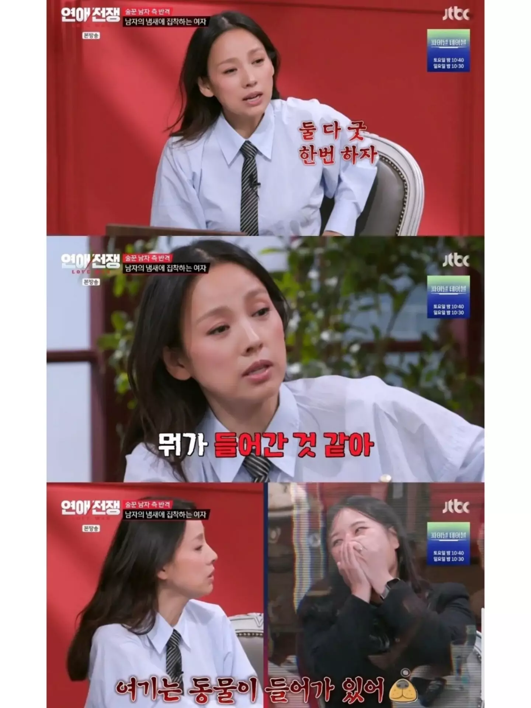











멘헤라중에 냄새 환장하는여자들 잇긴함
이성 겨에 환장하는건 너무 흔한일임
햇반 없는거 보니 대본임

아 적당히 대본 해야지 너무 과하면 몰입 안됨
ㅋㅋㅋㅋ 누가짰냐
gemini
대본보소 ㅋㅋㅋㅋ
대본 ai 돌린듯
좋은 거 아닌가 ㅋㅋㅋ
리액션 하는애들도 헛웃음나오네
대본인 척하고 진짜라면...? 아냐 대본일 거야!
대본 뇌절도 적당히 해야지 ㅅㅂ
ㅇㅅ<)b 굿~
방송은 모든게 대본이다
대본은 ㅈ같은데 그럼에도 불구하고 세상 행복한 부부 같아서 좀 질투나긴 함
저런 페티쉬가 있긴 한데 ㅋㅋㅋㅋ
애초에 요즘 티비 누가 봄?
이런건 방송작가들이 직접 캡쳐해서 뿌리나?
근데 영상 캡처가 와이라노 여자 얼굴은 억지로 안보여 줄려는건가 죄다 비껴가네
그러네? 여자 정면클로즈업만 다 잘라서 자막만 나오게 해놨네? 별 십 ㅋㅋㅋ
뭐 저게 방송 대본인지 실제인지는 모르겠는데
실제로 예전에 그 뭐냐.. 남자애중에 겨드랑이에서 쌉싸름한 흑연냄새? 나는애 있었는데
남자애들은 다들 겨냄새라고 생각하는데 여자애들은 다들 좀 향긋하게 느꼈다고 그런 얘기 듣고나서 그러려니 함
남자들 여자 겨 페티쉬 있는거야 뭐 나부터 해서 인터넷에 수두룩하고 ㅋㅋㅋ
암내잖슴;
당연히 암내지 ㅋㅋㅋ
근데 여자애들이 냄새 좋다는데 뭐 어쩔겨 ㅋㅋ
ㄷㄷ 냄새페티쉬
것보다 집이 웰케 지저분하냐
여자들 남자냄새 좋아하는거 몇번본적있음 특히 겨드랑이에 집착하더라 바로씻고왔어도 킁킁거림
주작을해도 좀
근데 나도 아내 냄새 좋아하는데.. 너네는 다 안그래??
대본 티 너무나면 재미 없는데...